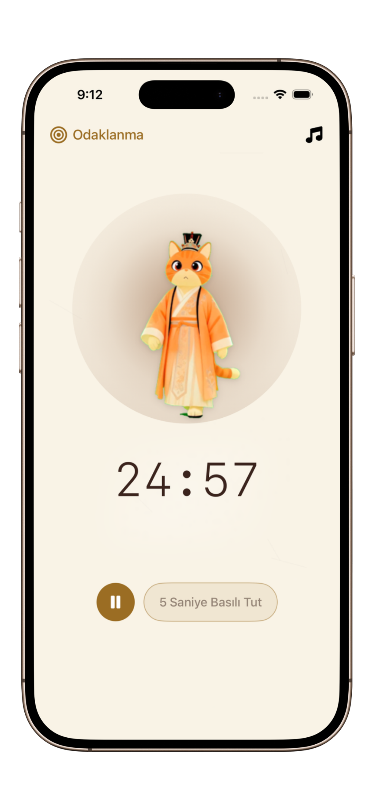
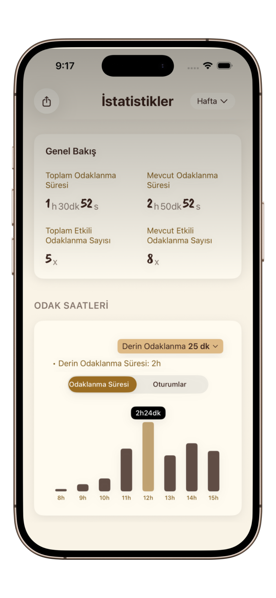

Ders Çalışırken Nasıl Odaklanılır: 2026 Öğrenci Rehberi
Ekranda kaydırmayı bırakın ve akışa başlayın. Uzun çalışma seanslarını yüksek verimli odak bloklarına dönüştürmek için bilimsel teknikleri keşfedin.
Hepimiz oradaydık: ders kitabını açarsınız ama beş dakika sonra kendinizi sosyal medyada bulursunuz. 2026 yılındaki öğrenciler için dikkat savaşı her zamankinden daha zor. Ancak odaklanmak irade gücüyle ilgili değil, sistem tasarımıyla ilgilidir.
Geleneksel Çalışma Neden Başarısız Olur?
Çoğu öğrenci, aralıksız 4 saat boyunca oturarak odağını zorlamaya çalışır. Bu durum bilişsel yorgunluğa ve verim kaybına yol açar. Beyniniz bir kastır; ritmik bir çaba ve dinlenme döngüsüne ihtiyaç duyar.


Bilim Destekli 3 Ders Çalışma İpucu
1. Pomodoro Ritmi (25/5 Kuralı)
Sadece 25 dakikalık derin çalışma için PurrrrrFocus gibi bir zamanlayıcı kullanın. Bir sonun göründüğünü bilmek, ertelemeye neden olan "başlama acısını" azaltır.
2. Aktif Hatırlama ve Aralıklı Tekrar
Notları tekrar tekrar okumayın. Kitabı kapatın ve kendinizi test edin. Bu yoğun zihinsel sprintleri, momentumunuzu korumak için sakin bir odak zamanlayıcısı ile eşleştirin.
3. Dijital Detoks Ortamı
Telefonunuz bir "dopamin slot makinesi"dir. Çalışırken telefon kullanımını engellemek için uygulamadaki Elit Odak Modu'nu açın.
Öğrenciler Neden PurrrrrFocus'u Tercih Ediyor?
Oyun gibi hissettiren neon renkli verimlilik uygulamalarının aksine, PurrrrrFocus oryantal mürekkep tarzı bir estetik kullanır. Bu "Zen" yaklaşımı, yüksek stresli sınav dönemlerinde hayati önem taşıyan kortizol seviyelerini düşürür.
- Oryantal Sakinlik: Minimalist mürekkep stili çevresel görüşünüzü dağıtmaz.
- Kedi Arkadaş: Final sınavlarına çalışmak yalnız hissettirebilir. Odak kediniz, sakin kalmanıza yardımcı olmak için yavaşça nefes alarak yanınızda olur.
- iCloud Senkronizasyonu: Kütüphanedeki iPad'inizden yoldaki iPhone'unuza çalışma serinizi kaybetmeden geçiş yapın.
Bir Sonraki Çalışma Seansınızı Dönüştürün
Sınav kaygısını yenmek ve akış durumlarını korumak için PurrrrrFocus kullanan 50.000'den fazla öğrenciye katılın.
PurrrrrFocus'u Ücretsiz İndirKendi "Odak Tapınağınızı" Oluşturun
Odaklanmak için bir ritüele ihtiyacınız var. Masanızı temizleyin, bir bardak su alın, PurrrrrFocus'u açın ve kedi arkadaşınızı seçin. Bu, beyninize şunu söyler: "Seans başladı. Şimdi derin çalışma modundayız."